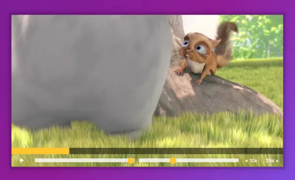
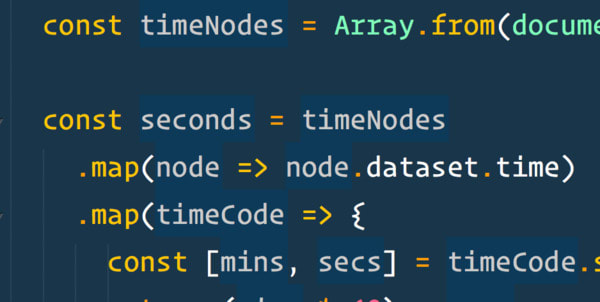
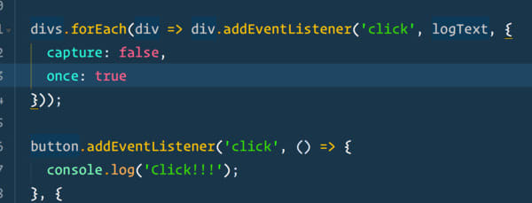
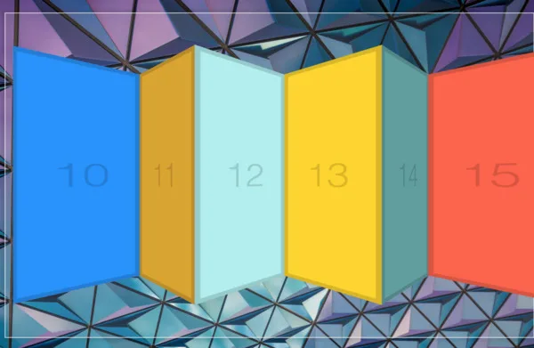

Chen
Home
About
Blog
Contact
JavaScript
30
30 Day Vanilla JS Coding Challenge
DAY 01
製作一個按鍵發聲的爵士鼓
Demo
DAY 02
製作一個實時時鐘
Demo
DAY 03
製作可控制圖片邊框、模糊與黑白的濾鏡效果
Demo
DAY 04
filter, map, sort, reduce, includes, split的應用案例
Demo
DAY 05
製作一個動畫展開圖片的效果
Demo
DAY 06
製作一個即時顯示結果的搜尋框
Demo
DAY 07
some, every, find, findIndex, slice, spared的應用案例
Demo
DAY 08
製作一個HTML5的Canvas畫布
Demo
DAY 09
介紹Chrome開發工具中DOM break及各種console的格式
Demo
DAY 10
製作Shift+左鍵在check list中連續選取的效果
Demo
DAY 11

使用HTML5的video tag來製作各種播放器功能
Demo
DAY 12
製作一個判斷連續輸入指定內容的功能
Demo
DAY 13
製作一個當畫面滑至指定位置時載入圖片的效果
Demo
DAY 14
介紹陣列與物件的引用及複製
Demo
DAY 15
製作一個使用localStorage做的菜單增刪功能
Demo
DAY 16
製作一個用滑鼠使文字陰影偏移的效果
Demo
DAY 17
介紹如何將陣列在排除部分文字的情況下排序
Demo
DAY 18

使用Array的map()與reduce()來取得播放清單總秒數
Demo
DAY 19
使用getUserMedia與cavas來做影像濾鏡效果
Demo
DAY 20
製做一個語音輸入轉文字的工具
Demo
DAY 21
製做一個可以顯示當前方位與速率的工具
Demo
DAY 22
製作會跟著滑鼠移動的HightLight效果
Demo
DAY 23
製做一個文字轉語音輸出的工具
Demo
DAY 24
製作一個依捲動位置顯示不同樣式的置頂選單
Demo
DAY 25

解析addEventListener中捕捉、傳遞、與單次執行方法
Demo
DAY 26
製作一個隨著滑鼠移動展開的選單效果
Demo
DAY 27

製做一個可拖曳移動的水平捲軸
Demo
DAY 28
製作一個可控制影片速率的拉把
Demo
DAY 29
製作一個可自定義時間的倒數計時器
Demo
DAY 30
製做一個打地鼠的小遊戲
Demo